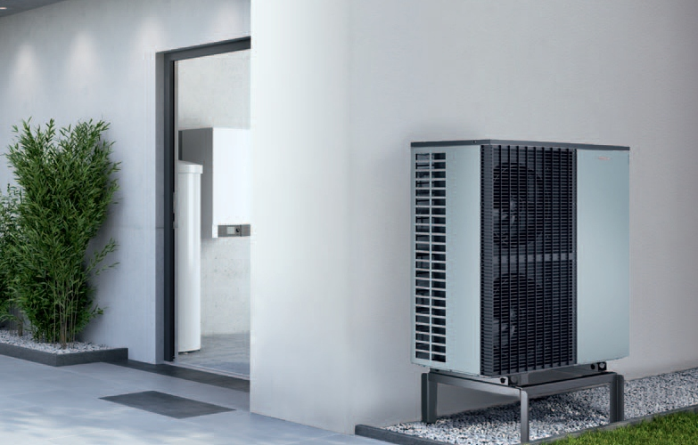

Pompy ciepła
Poznaj zalety rozwiązania,wykorzystanie i rodzaje

Pompy ciepła: zalety rozwiązania
Pompy ciepła są urządzeniami, które mogą pobierać ciepło z jednego źródła, takiego jak powietrze, woda lub gleba, a następnie przekazywać je do systemu ogrzewania lub chłodzenia. Istnieje wiele zalet stosowania pomp ciepła, oto niektóre z nich:
- Oszczędność energii: Pompy ciepła mogą być bardzo energooszczędne, ponieważ pobierają ciepło z bezpłatnych lub niskokosztowych źródeł i wykorzystują go do ogrzewania lub chłodzenia pomieszczeń. To znaczy, że pompy ciepła mogą znacznie obniżyć koszty energii w porównaniu z tradycyjnymi systemami ogrzewania i chłodzenia.
- Ochrona środowiska: W porównaniu z tradycyjnymi systemami ogrzewania, pompy ciepła mają mniejszy wpływ na środowisko, ponieważ nie generują emisji gazów cieplarnianych, takich jak dwutlenek węgla. W zależności od rodzaju pompy ciepła, można też wykorzystać energię odnawialną, co dodatkowo wpływa na zmniejszenie emisji szkodliwych gazów.
- Wielofunkcyjność: Pompy ciepła mogą służyć do ogrzewania oraz chłodzenia pomieszczeń, w zależności od potrzeb. Oznacza to, że można je wykorzystać przez cały rok, niezależnie od sezonu.
- Długa żywotność: Pompy ciepła są zwykle wytrzymałymi urządzeniami, które mogą służyć przez wiele lat. Ich żywotność może być dłuższa niż w przypadku tradycyjnych systemów ogrzewania.
- Łatwa instalacja: W większości przypadków instalacja pompy ciepła nie jest skomplikowana, co oznacza, że można ją zainstalować w krótkim czasie. Istnieją również różne rodzaje pomp ciepła, co pozwala na dopasowanie ich do różnych rodzajów budynków i potrzeb.
- Cicha praca: Pompy ciepła są zwykle bardzo ciche w porównaniu z tradycyjnymi systemami ogrzewania i chłodzenia. Oznacza to, że nie powodują one uciążliwego hałasu, co może być ważne w niektórych sytuacjach.

Pompa ciepła: wykorzystanie i rodzaje
Istnieją różne rodzaje pomp ciepła, w zależności od źródła ciepła, z którego pobierają ciepło oraz od zastosowań, do których są przeznaczone. Oto kilka najważniejszych rodzajów pomp ciepła:
- Pompy ciepła powietrze-powietrze (ASHP) - są to najpopularniejsze i najprostsze w instalacji pompy ciepła. Pobierają ciepło z powietrza zewnętrznego i przekazują je do systemu grzewczego. Najczęściej stosowane są w budynkach mieszkalnych.
- Pompy ciepła powietrze-woda (AWHP) - pobierają ciepło z powietrza zewnętrznego i przekazują je do systemu grzewczego oraz do wody użytkowej. Są często stosowane w budynkach mieszkalnych, a także w większych budynkach użyteczności publicznej.
- Pompy ciepła woda-woda (GSHP) - pobierają ciepło z wody gruntowej lub z wody powierzchniowej i przekazują je do systemu grzewczego oraz do wody użytkowej. Są skuteczne nawet w bardzo niskich temperaturach i dobrze sprawdzają się w większych budynkach.
- Pompy ciepła gleba-woda (GSHP) - pobierają ciepło z gruntu i przekazują je do systemu grzewczego oraz do wody użytkowej. Są skuteczne w różnych warunkach klimatycznych i często stosowane w budynkach mieszkalnych
- Pompy ciepła absorpcyjne zamiast sprężarki, tak jak w przypadku pozostałych typów pomp ciepła, wykorzystują do przetwarzania ciepła absorpcję przez specjalny medium (np. wodę lub amoniak). Są zwykle większe i bardziej skomplikowane w instalacji niż pozostałe typy pomp ciepła, a ich zaletą jest to, że wykorzystują ciepło odpadowe z różnych źródeł, takich jak przemysł, do produkcji ciepła i energii elektrycznej.